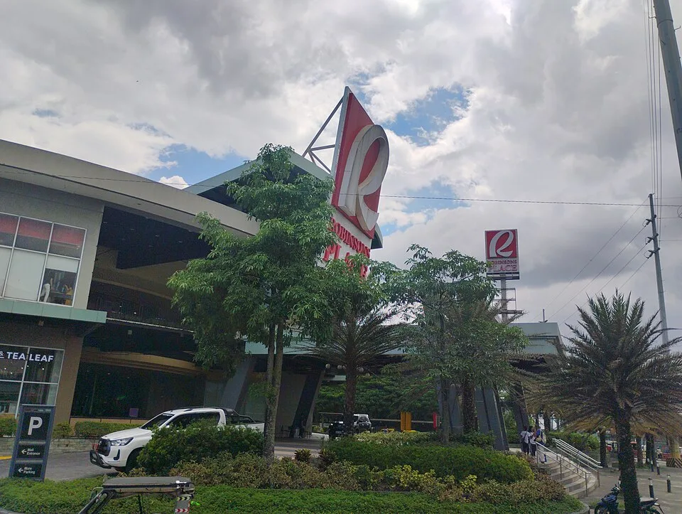
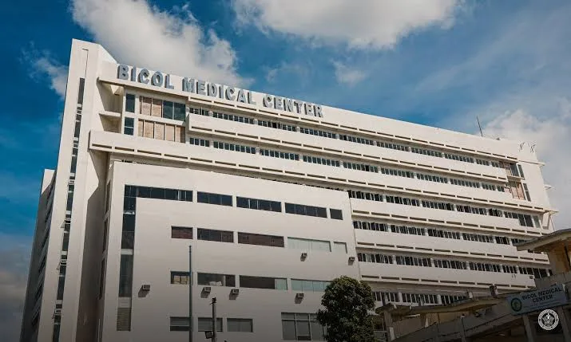
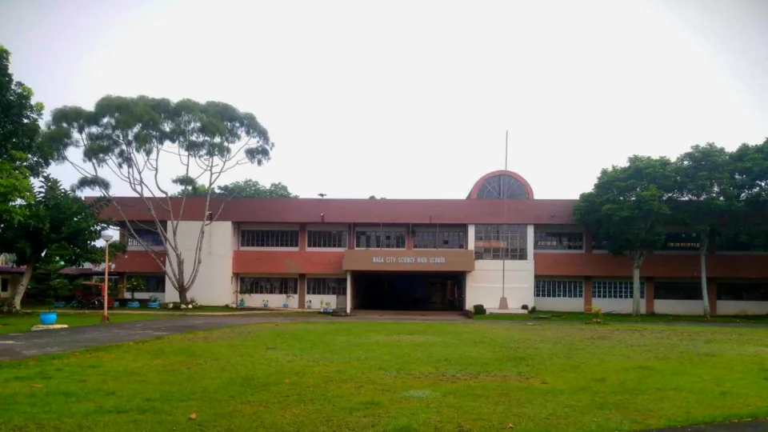
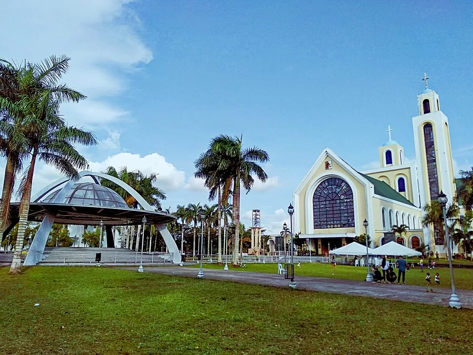
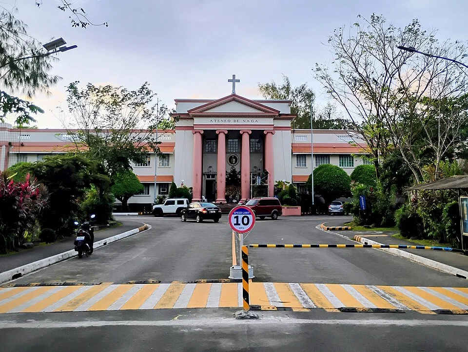
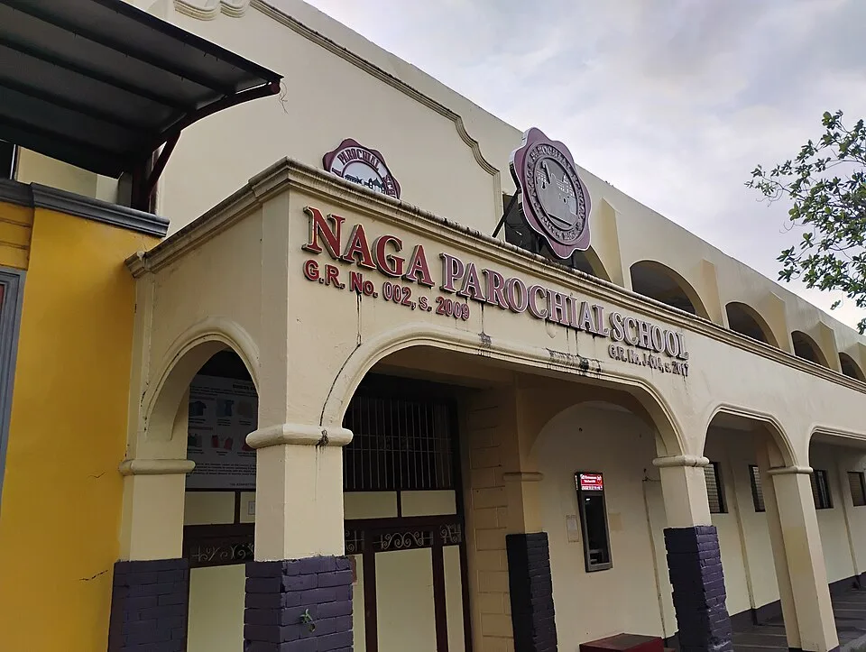
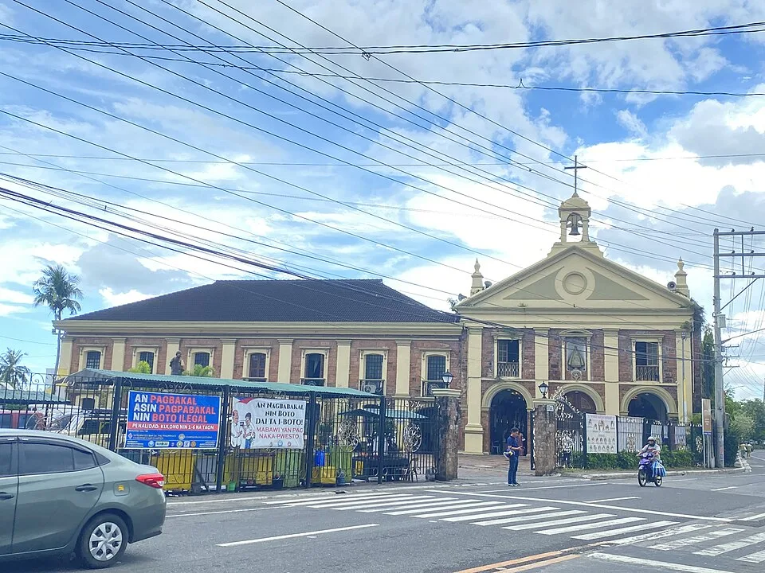

Robinsons Place Naga

Ralff Nestor Nacor · CC BY-SA 4.0 · Captured: 2025-05-10 13:19:32. Preview resized; no other changes.
File:Robinsons Place, Naga City, May 2025 (1).jpg
.jpg){kind=link}
Jev: abstain · confidence 0.47 · typesafe/jev-1.14-20261014
Jev ranked these options but returned review or abstain. The user approved the six named-creator candidates on 16 October 2026; those are now published in the app. Bicol Medical Center remains excluded pending creator-attribution resolution. Capture dates are not current site verification. Each resized preview retains its source license.

Ralff Nestor Nacor · CC BY-SA 4.0 · Captured: 2025-05-10 13:19:32. Preview resized; no other changes.
File:Robinsons Place, Naga City, May 2025 (1).jpg
Jev: abstain · confidence 0.47 · typesafe/jev-1.14-20261014

Unknown authorUnknown author · CC BY-SA 4.0 · Captured: 2024-10-01. Preview resized; no other changes.
Jev: review · confidence 0.69 · typesafe/jev-1.14-20261014

Cs4401 · CC BY-SA 4.0 · Captured: 2023-08-21. Preview resized; no other changes.
File:Naga City Science High School Main Building tejero-den-errol.png
Jev: review · confidence 0.52 · typesafe/jev-1.14-20261014

Ralff Nestor Nacor · CC BY-SA 4.0 · Captured: 2019-08-25 16:18:24. Preview resized; no other changes.
File:Penafrancia Basilica Minore, Naga City.jpg
Jev: abstain · confidence 0.43 · typesafe/jev-1.14-20261014

Ralff Nestor Nacor · CC BY-SA 4.0 · Captured: Taken on 14 December 2025, 08:58:26 (according to Exif data). Preview resized; no other changes.
File:Ateneo de Naga University, Dec 2025.jpg
Jev: review · confidence 0.77 · typesafe/jev-1.14-20261014

Ralff Nestor Nacor · CC BY-SA 4.0 · Captured: 2025-12-14 16:55:28. Preview resized; no other changes.
File:Naga Parochial School, Dec 2025 (1).jpg
Jev: review · confidence 0.51 · typesafe/jev-1.14-20261014

Kej Andrés (Ryomaandres) · CC BY-SA 4.0 · Captured: Taken on 28 April 2025, 13:43:17 (according to Exif data). Preview resized; no other changes.
File:Facade of Peñafrancia Shrine, Apr 2025 - 2.jpg
Jev: review · confidence 0.79 · typesafe/jev-1.14-20261014


.jpg){kind=link}